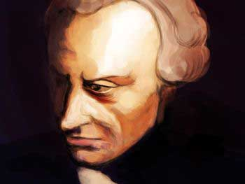
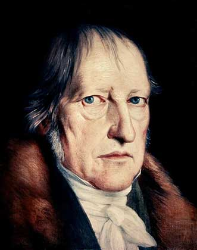
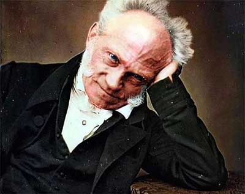

Иммануил Кант - Критика чистого разума (1781)
Один из флагманов Эпохи Возрождения, основоположник немецкой школы философской мысли - Иммануил Кант. Профессор, знаток множества наук, искренне верующий в Бога человек. И, по совместительству, один из самых ужасных писателей, кого я когда-либо читал :) Согласно истории, Кант обдумывал свою центральную книгу (Критика чистого разума) более 10 лет, но написал за 4-5 месяцев, и это видно. Позже он говорил, что ему необходимо было выложить всё на бумагу как можно скорее.
Его творение есть попытка объяснить мир и сконструировать метод мышления, на котором может и должна базироваться любая разумная созидательная деятельность, будь то написание философского труда или математической теоремы. Кант создает своего рода систему ориентиров и правил разума, при осознании и следовании которым любой усердный школяр может создать свою собственную философию (т.е другими словами - облечь в слова своё понимание мироздания и места человека в нём). Во главу угла Иммануилушка ставит априорное мышление: концепцию того, что человек располагает кое-каким знанием уже до опыта, то есть может знать что-то не имея никакой возможности это проверить на опыте. Такое a priori знание Кант нарекает трансцендентальным и ставит в противоположность эмпирическому. Следовательно, Кант делит человеческое познание на два лагеря:
1. Чувственное познание: задействует органы чувств и по сути есть проекция объектов созерцания на наш мозг.
Согласно Канту, чувственность не способна явить нам вещи такими, какие они есть на самом деле ("вещи в себе"), а образуется лишь посредством (в случае, например, зрения) соприкосновения отраженного от предмета света и сетчатки нашего глаза, посылающего затем это изображение в заднюю часть мозга, где и формируется картинка.
2. Рассудочное познание:оперирующее первичными категориями, которые Кант делит на 4 группы: количества, качества, отношения и модальности.
Утверждается, что 12 основных категорий рассудка суть есть нечто, отрезанное от непосредственного чувственного опыта, однако всё равно существующее! Другими словами, мы не сможем показать, например, качество предмета, однако оно существует само по себе и мы это понимаем.
Разделяя таким образом наше познание, Кант даёт понять, что созерцание без мысли - слепо, а мысль без опытного содержания - пуста, и что реальность лежит на стыке синтеза чувств и разума. То же самое доказывает его представление о времени и пространстве, как о чем то, совершенно беспредметном и абстрактном, но тем не менее являющимся основополагающими условиями любого опыта. Кроме прочего, Кант рассматривает такие понятия как анализ (разделение на части) и синтез (группировка разделенных частей во что-то качественно новое), как апостериорные (опытные) так и априорные ("безопытные") их проявления. Как раз в основу рассудка, например, Кант помещает априорный синтез, как некое умение рассудка синтезировать понятия без опыта перед тем, как приступать к самом опыту (математические теоремы). Также, Иммануил рассматривает противоречия разума, антиномии (by the way, закладывая тем самым основу будущей диалектики Гегеля). Антиномия это когда высказывание содержит в себе два противоречащих друг другу смысла, но по отдельности они оба при этом прекрасно логически доказываются. Данные противоречия возникают, когда разум пытается выйти за пределы опыта и познать вещи, как "вещи в себе", что невозможно. Кантик выделяет четыре главные антиномии:
- Мир конечен / бесконечен
- Все сложное это совокупность простых вещей / нет ничего простого
- В мире есть свобода / мир подвержен причинности ⇒ свободы нет
- Существует первопричина мира - Бог / первопричины нет
Кантыч считал, что мы не познаем мир во время чувственного созерцания, я же считаю, что напротив, созерцание открывает нам природу вещей, так как наш мозг и без участия сознания прекрасно во всём разбирается и, если ему позволить, может научить нас (это иногда зовётся интуицией). Более того, для постижения сути вещей нам вовсе не необходимы такие категории, как качество, количество или модальность: они есть социальные концепты, выдуманные для удобства во время развития культуры и цивилизации. Рассудок это словесное порождение нашего сознания, он прекрасен для анализа, но совершенно не годен для синтеза. Сводя чувственность к органам чувств, Кант тем самым ограничивает человека до своего рода механизма, а затем помещает его в извечную тёрку дуализма. Попытка Канта соединить чувственность и чистый разум с помощью времени логически красива, но выглядит как обвязывание цельного булыжника шелковой нитью. Плюсом к тому, стоит держать в уме исторический контекст его учений: Кант был детищем Ренессанса, другими словами - идеалистом, одной ногой ещё стоящем в философии христианства. Отсюда и приснопамятный дуализм.
Всё это не делает Канта менее гением, чем он был. Однако, чтение Канта это пытка и издевательство. Поэтому для ознакомления советую "Адорно Т.В. Проблемы философии морали. 1963" - курс лекций профессора Адорно. Живо, сочно, интересно. А ещё там подробно рассмотрены антиномии Канта, пожалуй самое интересное доказательство сбоев в работе рассудка.
Гегель
На основе методологии Канта, Гегель сформулировал и полноценно выразил науку логики, которая в свою очередь максимально практически вписалась в мир людей в виде математики и, вообще, могущественного инструмента мышления. Кантовские категории он доработал и изменил. Разработка Кантовских антиномий отточила его диалектику, как "всеобщий метод познания противоречий как внутренних движущих сил развития бытия, духа и истории". Гегель понимал диалектику как единственно возможный для науки путь понимания реальности, когда процесс идёт по схеме "тезис → антитезис → синтез". Гегель прекрасно объясняет мораль (по сути своей спорный концепт, попахивающий религией) и логически доказывает свободу человека через безграничную свободу человеческой воли, или духа. Весьма занятно соотносить его рассуждения о свободе человека с восточными представлениями о мире как об игре, где мы вольны выбирать любые роли, или же не выбирать их вовсе (у Гегеля этой идее схожа идея человеческой воли, подчиняющей себе реальность).
Для чтения советую Философскую пропедевтику - по факту, учебник по философии для старших классов Нюрнбергской школы, где он был директором и преподавал. Последовательно и гораздо более понятно, чем Кант, Гегель вводит школьников (и читателей) в основы философию.
Шопенгауэр
Шопенгауэр был талантливым последователем Канта. Он довёл идеализм то его последней инстанции, и по сути уподобился солипсистам: Шопенгауэр считал, что весь наш мир является плодом Представления некой вселенской бессознательной Воли, а по совместительству - "худшим из миров".Он терпеть не мог людей, а больше всего не переносил женщин, что в принципе только доказывает его представление о мире как о холодном и бессмысленном "нечто". При этом всём, будучи рожденным в привилегированной семье, Артур рано познакомился с искусством а также получил прекрасное образование. Его второй любимой философией после Канта были индийские упанишады и буддизм, и идея мира как представления некой воли (в индуизме Мир - это сон Бога Кришны), явно прослеживается корнями в восточные религии. Однако, при ближайшем рассмотрении становится ясно, что Артур не до конца принял эти учения, потому что его "вселенная" и "природа" были чем-то потусторонним и бессознательным в смысле безразличия, тогда как на востоке мир есть живая и активная квинтэссенция разумности. Шопенгауэр отрицал Кантовскую мораль, считая, что своими корнями она всё еще гнездится в христианстве (что в принципе верно), и упрекал Канта, например, в полном игнорировании животных, которых он (Артур) сам очень любил. Невозможно сказать про человека, любящего животных, что он был плохим человеком, но определенно Артур был своеобразным, или же писал все свои книги удовольствия ради.
Несмотря на вышеперечисленные неурядицы и психологические комплексы (вроде ненависти к женщинам), Артур явно понимал значение искусства. Он считал, что философия (и он вместе с ней) пошла не тем путём, ища смысла в рациональности, когда как надо было копать в искусстве. Он полагал, что творческий гений путем создания картины или музыкального произведения, или чего угодно другого, совершенно не осознаёт себя и не имеет не малейшего понятия, что он делает, тем самым позволяя вселенской Воли явить себя ему. Тем самым, через свои произведения, творец создаёт окошко к понимаю сути вещей. Когда мы смотрим на такое творение (если мы открываем себя ему), мы переносимся к познанию реальности, и при этом наш "рассудок" в этот момент молчит. Эту идею я полностью разделяю, и к тому же находил схожие идеи у некоторых других авторов, например, Олдоса Хаксли (особенно в его книге "Двери восприятия", где он описывает свой опыт с мескалином. К сожалению, моё знакомство с Шопенгауэрэм закончилось спустя несколько глав по его книге "Мир как Воля и Представление". Возможно, он показался мне слишком заумным и пессимистичным, а может быть была другая причина, но чтение мне не зашло. Я уверен, что при его более детальном изучении вполне возможно почерпнуть какие-то новые и интересные взгляды; возможно, время и место должны совпадать, и в будущем я вернусь к Артуру :). Тем не менее, я не раз встречался с отсылками к его трудам, и смог составить определенную картину о нём и его творчестве. Если тебе всё же захочется познакомиться с ним лично, советую, опять же, "Мир как Воля и Представление".
Цитаты
Иммануил Кант - Ответ на вопрос: Что такое Просвещение? (1784)
Просвещение -- это выход человека из состояния своего несовершеннолетия, в котором он находится по собственной вине. Несовершеннолетие есть неспособность пользоваться своим рассудком без руководства со стороны кого-то другого. Несовершеннолетие по собственной вине -- это такое, причина которого заключается не в недостатке рассудка, а в недостатке решимости и мужества пользоваться им без руководства со стороны кого-то другого. Sapere aude! -- имей мужество пользоваться собственным умом! -- таков, следовательно, девиз Просвещения.
Адорно - Проблемы философия морали. Комментарии к третьей антиномии о свободе и причинности Канта (1963)
В самом деле, нельзя утверждать, что в причинности обычного хода вещей законы свободы заменяют законы природы, так как, если бы свобода определялась законами, она была бы уже не свободой, а только природой. Следовательно, природа и трансцендентальная свобода, – формулирует Кант, прибегая к крайностям, – отличаются друг от друга как закономерность и отсутствие ее. Из них первая», – а именно закономерность – «правда, возлагает на рассудок трудную задачу искать происхождение событий в ряду причин все глубже и глубже, так как их причинность всегда обусловлена», – иными словами, она всегда ведет к новым причинам – «но в награду она обещает полное и законосообразное единство опыта. Ложный же блеск свободы» – здесь в Канте снова говорит детерминист эпохи Просвещения – «обещает, правда, пытливому рассудку дойти до конечного звена в цепи причин», – так, метафизика манит человека познать абсолют и в нем обрести успокоение, – «приводя его к безусловной причинности, начинающей действовать сама собой, но так как она сама слепа» («слепа» означает здесь то, что эта безусловная причинность совершенно не может вписаться в закономерные связи познания), «то она обрывает руководящую нить правил, без которой невозможен полностью связный опыт», иными словами, опыт предоставлен случаю.
Гегель - Философская пропедевтика. Обстоятельства и Воля (1808—1811)
Обстоятельства не являются причинами, а моя воля – их следствием. Согласно причинно-следственному отношению, то, что содержится в причине, должно последовать необходимо. Я же в качестве рефлексии могу выйти за пределы всякого определения, установленного обстоятельствами. Если человек ссылается на то, что с истинного пути его совратили обстоятельства, соблазны и т.д., то этим он хочет как бы отстранить от себя поступок, но тем самым лишь принижает себя до несвободного существа – существа природы, в то время как на самом деле его поступок всегда является его собственным поступком, а не поступком кого-то другого, т.е. не является следствием чего-либо вне этого человека.